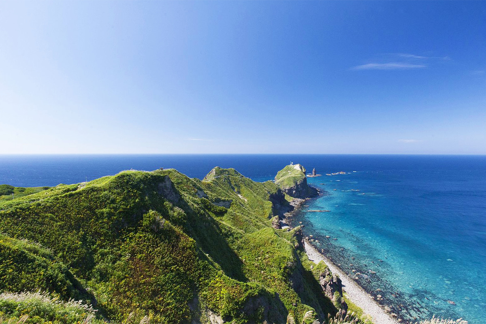
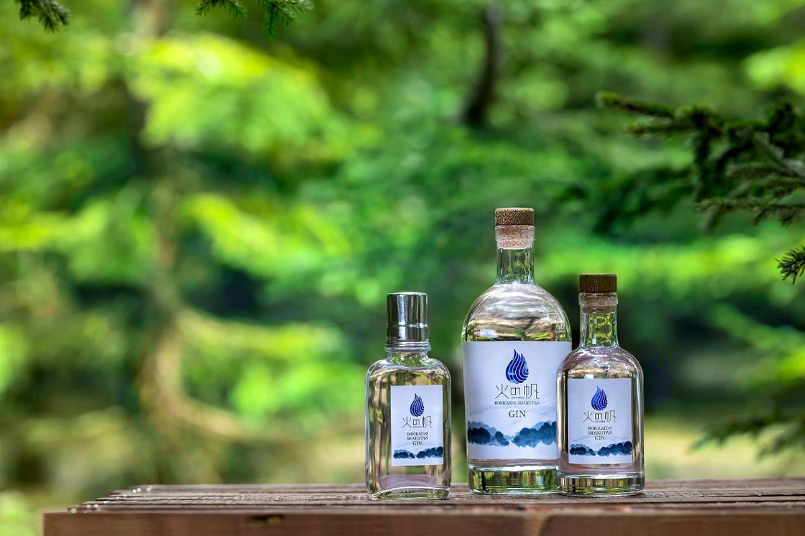
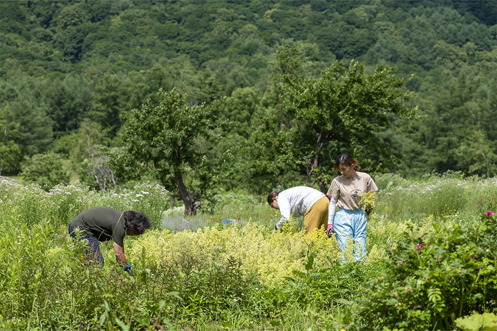
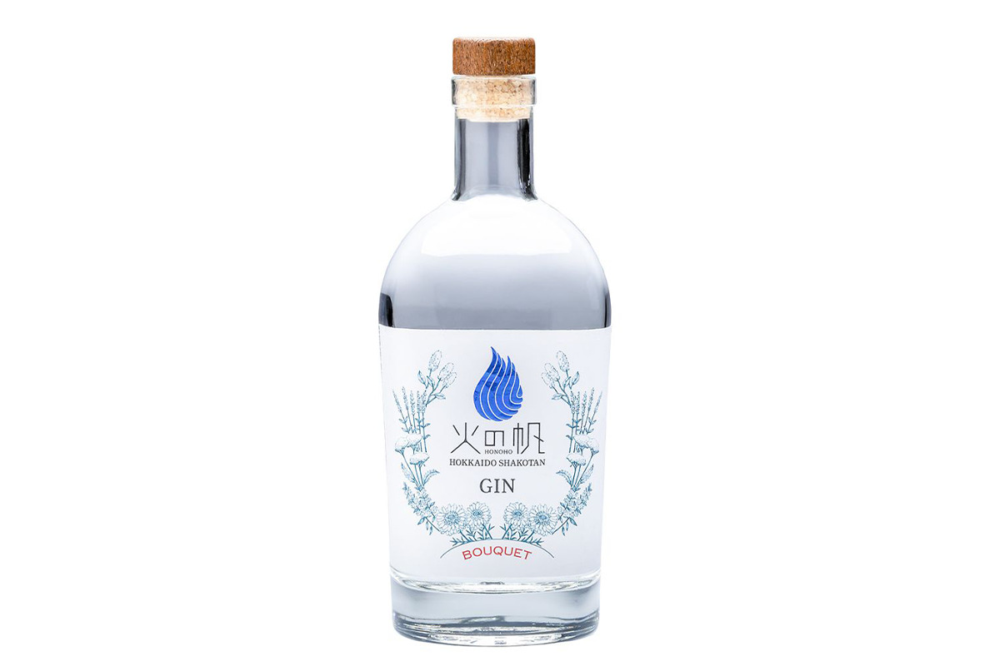
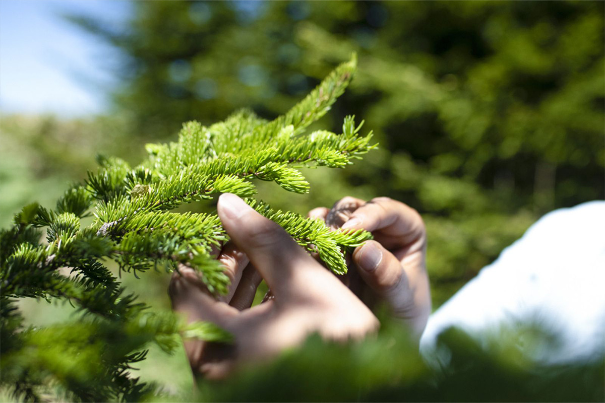
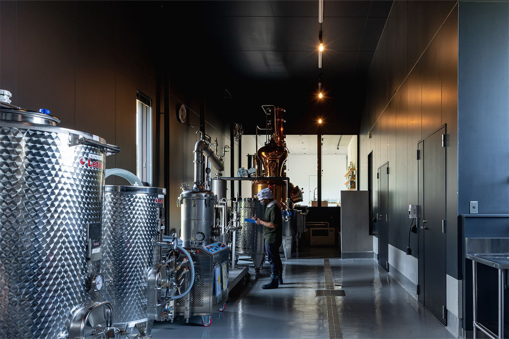
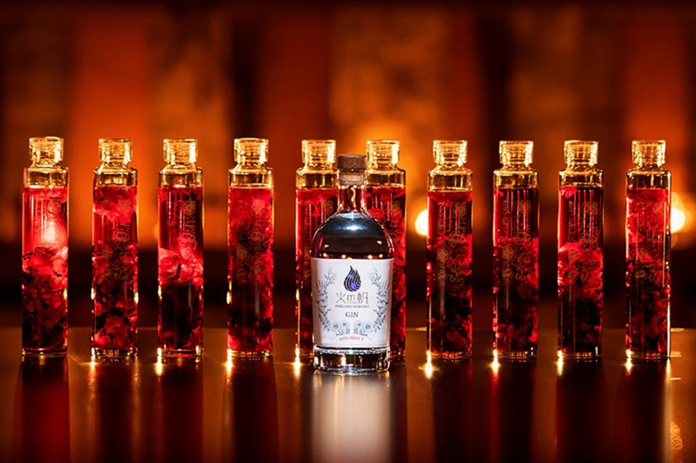
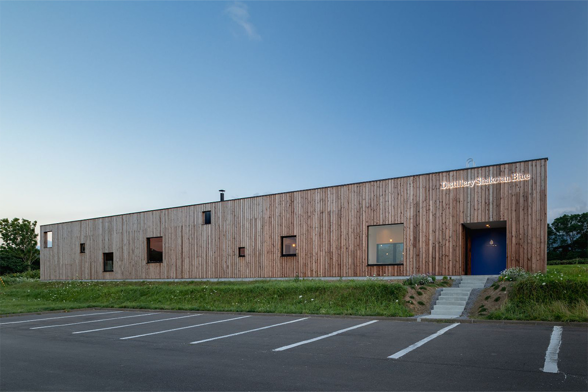

Префектура Хоккайдо · Сякотан · джин
Джин HONOHO с полуострова Сякотан: травы с собственного поля и синее море Хоккайдо

Городок Сякотан на северо-западе Хоккайдо известен мысом Камуи и морскими ежами. С 2018 года здесь делают джин из трав, которые растут на собственном поле компании, и называют его «Огненный парус».
Место
Полуостров «синевы Сякотана»
Название Сякотан пришло из айнского языка: «сак котан» значит «место, где живут летом». «Сак» это лето, «котан» это селение.
Городок стоит на самом конце полуострова Сякотан, примерно в двух часах на машине от Саппоро. В 2022 году жителей в нём было около 1900. На Хоккайдо вообще много пород деревьев, хвойные леса здесь смешаны с лиственными. А на Сякотане в радиусе десяти километров умещаются растения гор, рек и морского берега: полуостров похож на уменьшенную копию всей растительности Хоккайдо. Для того, кто ищет травы для джина, место почти идеальное.

Начало
Джин, чтобы оживить городок
На Сякотан приезжает около миллиона туристов в год, а жителей в городке чуть больше 1900. Чтобы дать городу новое дело, Хирофуми Ивай, консультант по сельскому, лесному и рыбному хозяйству, в 2015 году начал искать джин, который стал бы символом полуострова.

В городе пустовали 90 гектаров заброшенной пашни. Идею, как её оживить, подала дизайнер по дереву с Хоккайдо: по её словам, рельеф и климат Сякотана похожи на шотландские, и в здешних лесах можно выращивать травы для джина. Ивай отправился в Шотландию, на родину напитка, изучал растения и рецепты и за пять лет собрал нужные знания. В 2018 году появилась компания Shakotan Spirit, которая перегоняет джин из трав, выросших на Сякотане.
Имя
«Огонь» и «парус»
Бренд называется «Хонохо». Это старинное слово, от которого произошло японское «пламя», и записывалось оно знаками «огненный колос». Но Сякотан и по географии, и по истории связан не только с огнём, но и с морем и ветром. Поэтому вместо «колоса» выбрали «парус», и получилось «Огненный парус».
Девиз бренда звучит так: «На огненном напитке и на ветру выйти в синее море Сякотана». В имя вложено две мысли. Джин не только согревает, он зажигает в людях огонь и дарит смелость и надежду. А ещё это «ветер», который поможет Сякотану создать новую историю и культуру и передать их следующим поколениям.

Слово «огонь» в названии не случайно. Крепкие перегнанные напитки и так зовут «огненными». Сам полуостров родился из вулканической деятельности. А летом здесь проходит старинный обряд «хождение тэнгу по огню». Пламя на бутылке окрашено в синий цвет Сякотана.
Поле
От грядки до перегонного куба
Главная сила Shakotan Spirit в том, что компания сама выращивает травы и сама их перегоняет. Для винокурни такое редкость даже по мировым меркам. Город сдал компании в долгую аренду около 5 гектаров заброшенной пашни. Пустошь сначала отдали лошадям: они выедали траву и удобряли землю, и только потом поле вспахали. К 2022 году здесь выращивали около 80 видов пряных и душистых растений.

Листья, плоды и ветки хранятся по-разному, поэтому их используют свежими, замораживают сырыми, сушат на воздухе или в сушилке. Так сырьё остаётся в лучшем виде круглый год. Перегоняют травы в аппарате, который работает при пониженном давлении: жидкость закипает при более низкой температуре, и аромат растения сохраняется полнее. Каждую траву перегоняют отдельно, и на это уходит много времени.

Джин
KIBOU: ель, которая не сбрасывает хвою
Айны называли ель Глена, по-японски акаэдзомацу, «богиней леса». Даже в самые суровые морозы она не теряет хвою и стоит прямо, поэтому стала символом красоты и надежды. В основе KIBOU (по-японски «надежда») глубокий апельсиновый аромат этой ели, а к нему добавлены травы Хоккайдо и Сякотана. Бутылка 500 мл крепостью 45% стоила 5940 иен с налогом в 2022 году.
Джин
BOUQUET: цветы, земля и воздух поля
Над полем Shakotan Spirit дует ветер с полуострова и разносит слои запахов от цветущих трав. BOUQUET задуман как джин о цветах: в нём хотели сохранить цветы, землю и воздух этого места, чтобы открывать его по особым дням. Бутылка 500 мл крепостью 45% стоила 6820 иен с налогом в 2022 году.

Создатели хотят, чтобы джин помогал беречь природу не только Сякотана, но и всего мира. Попробовать Хоккайдо на вкус можно в одном бокале.

Shakotan Spirit, джин HONOHO
- Адрес
- префектура Хоккайдо, уезд Сякотан, Сякотан, Бикуни, Фунама, 380-6 (Туристическая ассоциация Сякотана, одна из точек продажи)
- Телефон
- +81 135-44-3715 (Туристическая ассоциация Сякотана)